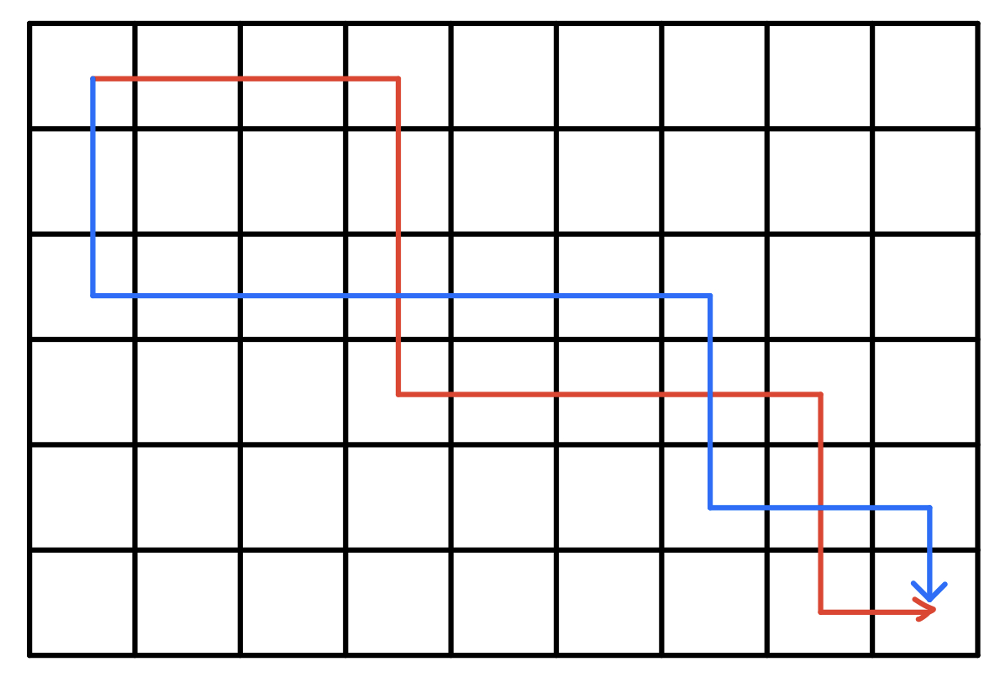
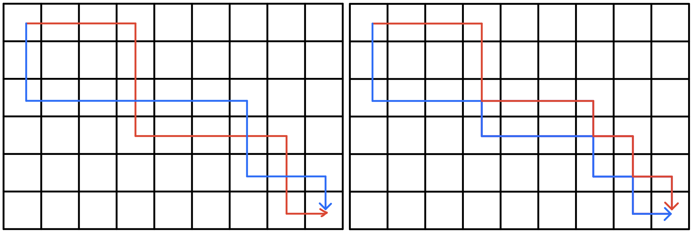
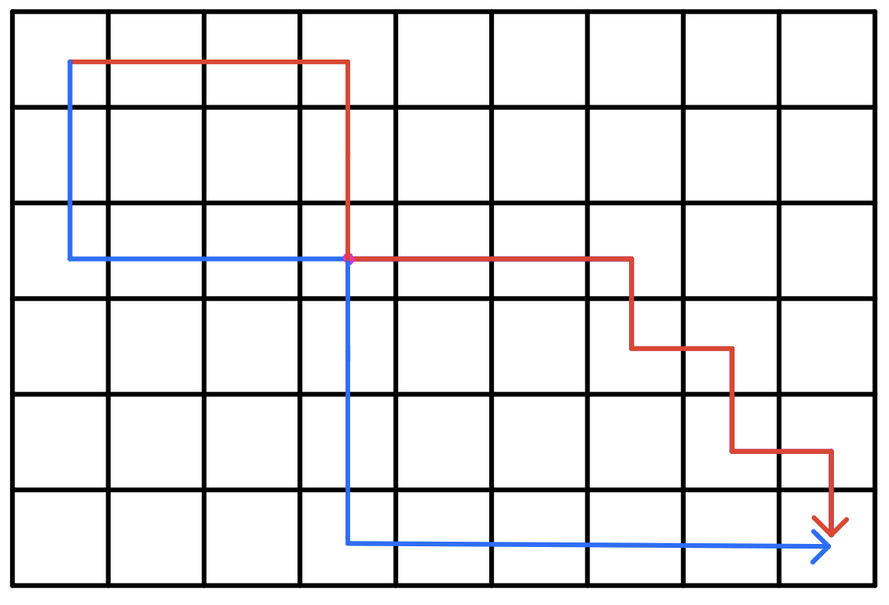
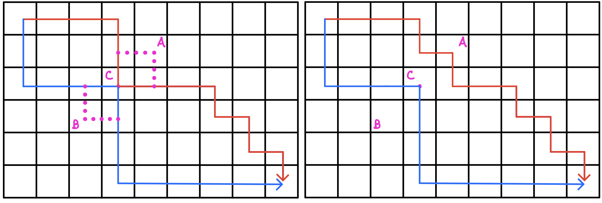

数字三角形模型
例1.摘花生
题目描述
Hello Kitty想摘点花生送给她喜欢的米老鼠。
她来到一片有网格状道路的矩形花生地(如下图)，从西北角进去，东南角出来。
地里每个道路的交叉点上都有种着一株花生苗，上面有若干颗花生，经过一株花生苗就能摘走该它上面所有的花生。
Hello Kitty只能向东或向南走，不能向西或向北走。
问Hello Kitty最多能够摘到多少颗花生。

输入格式
第一行是一个整数T，代表一共有多少组数据。
接下来是T组数据。
每组数据的第一行是两个整数，分别代表花生苗的行数R和列数 C。
每组数据的接下来R行数据，从北向南依次描述每行花生苗的情况。每行数据有C个整数，按从西向东的顺序描述了该行每株花生苗上的花生数目M。
输出格式
对每组输入数据，输出一行，内容为Hello Kitty能摘到得最多的花生颗数。
数据范围
\(1≤T≤100,\)
\(1≤R,C≤100,\)
\(0≤M≤1000\)
输入样例
1 2 3 4 5 6 7 | |
输出样例
1 2 | |
思路
标准的动态规划题目,从以下三个角度来分析
- 状态表示:
- 集合:定义\(f[i,j]\)表示从\((1,1)\)到\((i,j)\)的所有方案
- 属性:最大值
- 状态转移:
- \((i,j)\)从\((i-1,j)\)转移过来,\(f[i,j]=f[i-1,j]+a[i,j]\)
- \((i,j)\)从\((i,j-1)\)转移过来,\(f[i,j]=f[i,j-1]+a[i,j]\)
- 优化
- 由于\(f[i][j]\)只需要用到这一层和上一层的元素,因此可以用滚动数组优化空间
代码
1 2 3 4 5 6 7 8 9 10 11 12 13 14 15 16 17 18 19 20 21 22 23 24 25 | |
例2.最低通行费
题目描述
一个商人穿过一个 \(N×N\) 的正方形的网格，去参加一个非常重要的商务活动。
他要从网格的左上角进，右下角出。
每穿越中间\(1\)个小方格，都要花费\(1\)个单位时间。
商人必须在 \((2N−1)\) 个单位时间穿越出去。
而在经过中间的每个小方格时，都需要缴纳一定的费用。
这个商人期望在规定时间内用最少费用穿越出去。
请问至少需要多少费用？
注意：不能对角穿越各个小方格（即，只能向上下左右四个方向移动且不能离开网格）。
输入格式
第一行是一个整数，表示正方形的宽度$ N$。
后面\(N\)行，每行$ N \(个不大于\) 100 $的正整数，为网格上每个小方格的费用。
输出格式
输出一个整数，表示至少需要的费用。
数据范围
\(1≤N≤100\)
输入样例
1 2 3 4 5 6 | |
输出样例
1 | |
题解
- 状态表示:
- 集合:\(f[i,j]\)表示从起点出发,走到第\((i,j)\)的所有方案
- 属性:总价值最小
- 状态转移:
- \(f[i,j]=min(f[i-1,j],f[i,j-1])+w[i,j]\)
代码
1 2 3 4 5 6 7 8 9 10 11 12 13 14 15 16 17 18 19 20 21 22 23 | |
例3.方格取数
题目描述
设有 N×N 的方格图，我们在其中的某些方格中填入正整数，而其它的方格中则放入数字0。如下图所示：

某人从图中的左上角 A 出发，可以向下行走，也可以向右行走，直到到达右下角的 B 点。
在走过的路上，他可以取走方格中的数（取走后的方格中将变为数字0）。
此人从 A 点到 B 点共走了两次，试找出两条这样的路径，使得取得的数字和为最大。
输入格式
第一行为一个整数N，表示 N×N 的方格图。
接下来的每行有三个整数，第一个为行号数，第二个为列号数，第三个为在该行、该列上所放的数。
行和列编号从 1 开始。
一行“0 0 0”表示结束。
输出格式
输出一个整数，表示两条路径上取得的最大的和。
数据范围
\(N≤10\)
输入样例
1 2 3 4 5 6 7 8 9 10 | |
输出样例
1 | |
题解
刚开始看到这道题，正常思路应该是用开四维DP，\(f[x1,y1,x2,y2]\)表示两条路线走到的位置，可由于题目给出一个格子的贡献无法重复计算，因此还需要增加一维来表示每个格子是否被取过，但这样显然时间空间都爆炸，因此考虑其他方法
虽然题目要求先后出发，但实际上不管是先后出发还是同时出发，一个格子的贡献都只能被算一次，而我们若选择同时出发的话，可以发现两条路线的曼哈顿距离是相等的，这样可以通过三维状态表示两个点的位置，继续从以下表示和转移两个角度考虑:
- 状态表示:
- 属性:\(f[k,i,j]\)表示路径长度为k,第一条路径的x坐标为i,第二条路径的x坐标为j的所有方案
- 集合:总价值最大
- 状态转移:
- \(f[k,i,j]=max(f[k-1,i,j],f[k-1,i-1,j],f[k-1,i,j-1],f[k-1][i-1][j-1])+w[i,j]\)
代码
1 2 3 4 5 6 7 8 9 10 11 12 13 14 15 16 17 18 19 20 21 22 23 24 25 26 27 28 29 30 31 32 33 34 35 36 37 38 | |
例4.传纸条
题目描述
小渊和小轩是好朋友也是同班同学，他们在一起总有谈不完的话题。
一次素质拓展活动中，班上同学安排坐成一个 m 行 n 列的矩阵，而小渊和小轩被安排在矩阵对角线的两端，因此，他们就无法直接交谈了。
幸运的是，他们可以通过传纸条来进行交流。
纸条要经由许多同学传到对方手里，小渊坐在矩阵的左上角，坐标 (1,1)，小轩坐在矩阵的右下角，坐标 (m,n)。
从小渊传到小轩的纸条只可以向下或者向右传递，从小轩传给小渊的纸条只可以向上或者向左传递。
在活动进行中，小渊希望给小轩传递一张纸条，同时希望小轩给他回复。
班里每个同学都可以帮他们传递，但只会帮他们一次，也就是说如果此人在小渊递给小轩纸条的时候帮忙，那么在小轩递给小渊的时候就不会再帮忙，反之亦然。
还有一件事情需要注意，全班每个同学愿意帮忙的好感度有高有低（注意：小渊和小轩的好心程度没有定义，输入时用 0 表示），可以用一个 0∼100 的自然数来表示，数越大表示越好心。
小渊和小轩希望尽可能找好心程度高的同学来帮忙传纸条，即找到来回两条传递路径，使得这两条路径上同学的好心程度之和最大。
现在，请你帮助小渊和小轩找到这样的两条路径。
输入格式
第一行有 2 个用空格隔开的整数 m 和 n，表示学生矩阵有 m 行 n 列。
接下来的 m 行是一个 m×n 的矩阵，矩阵中第 i 行 j 列的整数表示坐在第 i 行 j 列的学生的好心程度，每行的 n 个整数之间用空格隔开。
输出格式
输出一个整数，表示来回两条路上参与传递纸条的学生的好心程度之和的最大值。
数据范围
\(1≤n,m≤50\)
输入样例
1 2 3 4 | |
输出样例
1 | |
题解
由于从\((n,m)\)点通过向上向左走到\((1,1)\)，等同于从\((1,1)\)点通过向下向右走到\((n,m)\)
因此本题就转化为:
从\((1,1)\)出发到达\((n,m)\)，且每次只能向下或向右，先后出发两次，且两次不能通过重复格子的方案数
与上一题方格取数很相似，但规定了不能走重复格子
接下来我们给出一个结论:
方格取数中最优方案两条路径一定不走重复格子
接下来给出证明:
情况1: 最优解的两条路径是相互交叉经过的

则我们可以对交叉部分进行路径交换

这样就得到了不交叉的路线
因此对于每一种交叉路径，都必然有一条不交叉路径与其对应
情况2: 最优解的两条路径不交叉，但在某些点重合

这种情况我们可以对其继续微调，如下图

我们一定可以找到额外的一条路径，使其不通过重复点
因此得证
经过以上证明，我们发现这题和上题一模一样，具体状态定义和转移见上题
代码
1 2 3 4 5 6 7 8 9 10 11 12 13 14 15 16 17 18 19 20 21 22 23 24 25 26 27 28 29 30 31 32 33 34 35 | |